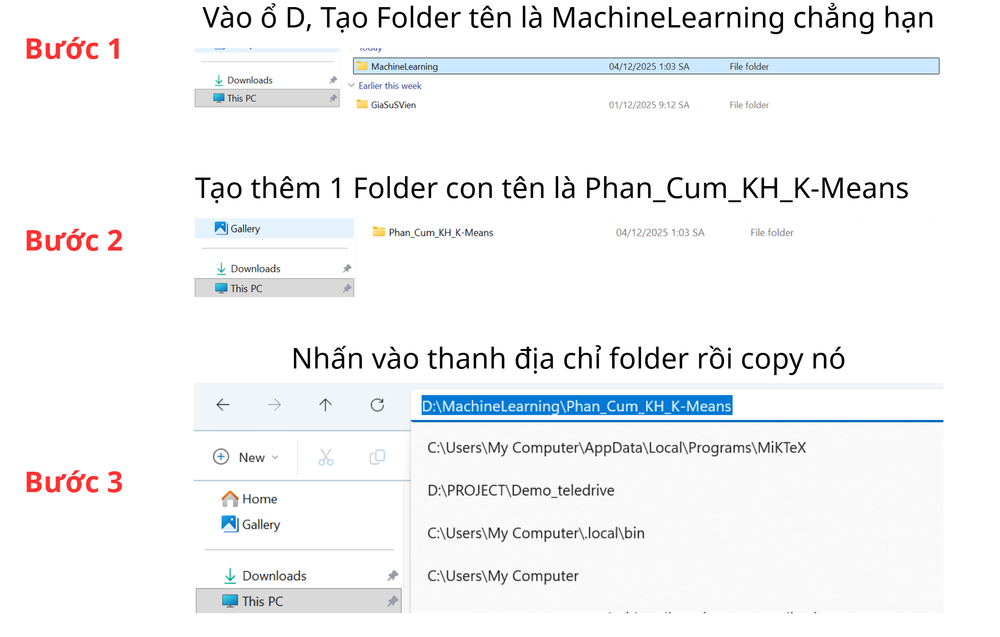

Giới Thiệu và Tổng Quan Triển Khai Machine Learning (ML Ops Cơ bản)
Tài liệu này cung cấp hướng dẫn từng bước để triển khai và thử nghiệm các mô hình Học máy (Machine Learning) cơ bản, tập trung vào việc sao chép (clone) và vận hành một dự án mẫu sử dụng Jupyter Notebook.
Các Yếu Tố Cấu Thành Quy Trình Triển khai
Quy trình triển khai cơ bản bao gồm các thành phần sau:
- CMD (Command Line Interface): Sử dụng dòng lệnh để thực hiện các thao tác quản lý tệp tin, môi trường và giao tiếp với hệ thống kiểm soát phiên bản (Git).
- GitHub: Hệ thống lưu trữ và kiểm soát phiên bản tập trung, nơi mã nguồn dự án được sao chép và đồng bộ hóa.
- Environment (Môi trường Ảo): Khu vực cô lập được tạo ra để chứa các thư viện phụ thuộc của dự án, nhằm ngăn chặn xung đột giữa các phiên bản thư viện khác nhau trên cùng một hệ thống.
- Deploy (Triển khai): Quá trình đưa mô hình từ môi trường phát triển thành một sản phẩm có thể được người dùng cuối tương tác.
Cấu trúc Tài liệu Hướng dẫn
Các bước thực hiện được sắp xếp theo trình tự logic như sau:
- **Sử dụng Git và CMD:** Thao tác sao chép mã nguồn từ GitHub về máy tính cục bộ.
- **Cài đặt Môi trường (Environment):** Thiết lập Python và các thư viện phụ thuộc.
- **Chạy Mô hình Học Máy:** Vận hành và kiểm tra kết quả mô hình K-Means trên Jupyter Notebook.
👉 Hành động: Chuyển sang phần **"Git Clone: Sao Chép Mã Nguồn"** để bắt đầu quá trình.
Git Clone: Sao Chép Mã Nguồn Dự Án
Lệnh git clone được sử dụng để sao chép toàn bộ kho lưu trữ (Repository) từ máy chủ GitHub về máy tính cá nhân của bạn.
Bước 2: Chuẩn bị Thư mục Cục bộ
Tạo một thư mục mới tại ổ đĩa mong muốn (ví dụ: ổ D) để chứa mã nguồn. Sao chép đường dẫn tuyệt đối của thư mục này.

Bước 3: Thực hiện Lệnh Clone qua CMD
Mở giao diện Command Prompt (CMD) và thực hiện các lệnh sau:
🔎 Quy trình Thao tác
Thao tác 1: Điều hướng đến Thư mục Dự án
📝 Cú pháp: cd /d [Tên_Ổ_Đĩa]:\[Đường_Dẫn_Thư_Mục]
🔻 Ví dụ:
cd /d D:\MachineLearning\Phan_Cum_KH_K-Means
Thao tác 2: Sao chép Mã nguồn (Clone)
📝 Cú pháp: git clone [URL_Git] .
🔻 Ví dụ:
git clone https://github.com/nguyenhads/advanced_customer_segmentation.git .
(Ký tự dấu chấm (.) đảm bảo mã nguồn được sao chép trực tiếp vào thư mục hiện tại, không tạo thêm thư mục con.)
Chờ quá trình tải dữ liệu hoàn tất. Màn hình không báo lỗi **Fatal** là đã thành công.
Bước 4: Xác nhận Clone thành công
Sau khi quá trình Git hoàn tất, mã nguồn dự án đã được tải về thư mục cục bộ.

Tiếp theo, tiến hành thiết lập môi trường để chạy code.
Thiết lập Môi trường và Cài đặt Thư viện Phụ thuộc
Sau khi sao chép mã nguồn, cần cài đặt trình thông dịch Python và các thư viện phụ thuộc để dự án có thể hoạt động chính xác.
Bước 1: Cài đặt Python 3.10 (Phiên bản ổn định)
Dự án khuyến nghị sử dụng Python 3.10 để đảm bảo tính tương thích với tất cả các thư viện.
👉 Liên kết tải: Link tải Python 3.10.11 (Bản ổn định)
⚠️ LƯU Ý BẮT BUỘC KHI CÀI ĐẶT
Khi giao diện cài đặt hiển thị, người dùng **bắt buộc** phải tích chọn vào tùy chọn:
☑ Add Python 3.10 to PATH
Nếu bỏ qua bước này, hệ thống sẽ không nhận diện được lệnh `python` trong CMD, dẫn đến lỗi **"Python is not recognized"**.

Bấm **Install Now** để hoàn tất quá trình cài đặt.
Bước 2: Kiểm tra Phiên bản Python
Mở CMD và nhập lệnh sau để xác nhận Python đã được cài đặt và thêm vào biến môi trường PATH thành công:
python --version

Nếu kết quả hiển thị là Python 3.10.11, quá trình cài đặt cơ bản đã thành công.
Bước 3: Thiết lập và Cài đặt Thư viện Phụ thuộc
Thao tác 1: Điều hướng CMD
Đảm bảo CMD đang ở đúng thư mục dự án đã sao chép về ở Bước 1.
Thao tác 2: Tạo và Kích hoạt Môi trường ảo
Việc tạo môi trường ảo (Virtual Environment - `venv`) giúp **cô lập** các gói thư viện, ngăn ngừa xung đột phiên bản và đơn giản hóa việc quản lý dự án.
python -m venv venv
.\venv\Scripts\activate
Khi thấy tiền tố (venv) xuất hiện trước dòng lệnh, môi trường ảo đã được kích hoạt thành công.

Thao tác 3: Cài đặt Thư viện từ Tệp Yêu cầu
Sử dụng tệp `requirements.txt` để cài đặt hàng loạt các thư viện cần thiết (Pandas, NumPy, Scikit-learn,...) cho dự án:
pip install -r requirements.txt
👉 Giải thích: Tệp này liệt kê các **Dependencies** (thư viện phụ thuộc) cùng với phiên bản cụ thể. Lệnh `pip` sẽ tải và cài đặt chúng vào môi trường ảo hiện tại.


Bước 4: Cài đặt và Khởi chạy Jupyter Notebook
Jupyter Notebook là một công cụ lập trình tương tác (IDE nền web) cần thiết cho việc phát triển và trực quan hóa dữ liệu trong lĩnh vực Machine Learning.
Thao tác 1 & 2: Cài đặt Công cụ
Trong môi trường ảo đang kích hoạt, cài đặt các gói `ipywidgets` (công cụ tương tác) và `notebook` (công cụ vận hành giao diện web):
pip install ipywidgets
pip install notebook
💡 THÔNG TIN BỔ SUNG
Tên **Jupyter** là từ ghép giữa ba ngôn ngữ lập trình chính trong Khoa học dữ liệu: **Ju**lia, **Pyt**hon, và **R**. Đây là công cụ tiêu chuẩn để tạo và chạy các tài liệu Notebook.
Thao tác 3: Khởi động Jupyter
Thực hiện lệnh sau để khởi chạy máy chủ cục bộ và tự động mở giao diện Notebook trên trình duyệt web:
jupyter notebook

Hệ thống sẽ mở giao diện quản lý tệp trên trình duyệt. Bạn truy cập vào folder chứa mã nguồn của dự án (ví dụ: advanced_customer_segmentation) là hoàn tất quá trình cài đặt.

Nếu trình duyệt không tự động mở, bạn có thể dán đường link http://localhost:8888/tree vào thanh địa chỉ.

Quá trình cài đặt đã hoàn tất. Chuyển sang phần tiếp theo để vận hành Mô hình Học Máy.
Vận hành Mô hình Học Máy trên Jupyter Notebook
Phần này hướng dẫn các thao tác cơ bản để chạy và kiểm tra kết quả mô hình Phân cụm Khách hàng (K-Means) trong môi trường Jupyter Notebook.
Bước 1: Mở Notebook File và Kiểm tra Kernel
Sau khi mở giao diện quản lý tệp, bạn chọn file Notebook của dự án (ví dụ: phan_cum_khach_hang.ipynb) để truy cập giao diện chỉnh sửa.

👉 Kiểm tra Kernel: Đảm bảo **Kernel** (nhân xử lý) hiển thị ở góc trên bên phải đang chạy đúng với môi trường ảo đã kích hoạt (ví dụ: Python 3 (ipykernel)). Kernel chịu trách nhiệm thực thi các lệnh Python.

Bước 2: Thực thi Khối lệnh (Cells)
Mỗi Notebook được cấu tạo từ các **Khối lệnh (Cells)** chứa mã Python hoặc văn bản mô tả. Cần thực thi từng khối lệnh theo trình tự từ trên xuống dưới.


Phương pháp Thực thi:
- Chọn Khối lệnh mong muốn.
- Sử dụng nút **Run** (biểu tượng mũi tên) trên thanh công cụ, hoặc tổ hợp phím **Shift + Enter**.
Khi Khối lệnh đang chạy, bên cạnh sẽ hiển thị **In [*]**. Sau khi hoàn tất, nó sẽ chuyển thành **In [Số thứ tự]**.
⚠️ NGUYÊN TẮC THỰC THI
Người dùng **bắt buộc** phải thực thi các Khối lệnh **theo thứ tự tuyến tính từ trên xuống dưới**. Việc bỏ qua hoặc chạy sai thứ tự có thể dẫn đến lỗi **NameError** do các biến phụ thuộc chưa được khởi tạo.
Kết quả đầu ra sẽ hiển thị ngay bên dưới Khối lệnh đã thực thi.

Bạn có thể chọn **Run all cells** trên thanh menu để thực thi toàn bộ Notebook (chỉ khuyến nghị khi đã xác nhận code không có lỗi).

🎉 KẾT LUẬN
Bạn đã hoàn thành việc vận hành mô hình Phân cụm Khách hàng K-Means.
Đề nghị nghiên cứu kỹ lưỡng các biểu đồ và hình vẽ để nắm bắt ý nghĩa của kết quả Phân cụm Khách hàng. Bạn có thể thử nghiệm thay đổi dữ liệu hoặc số lượng cụm (tham số K) để phân tích sự thay đổi của mô hình.
Chúc bạn thành công trong lĩnh vực Phân tích Dữ liệu Lớn.